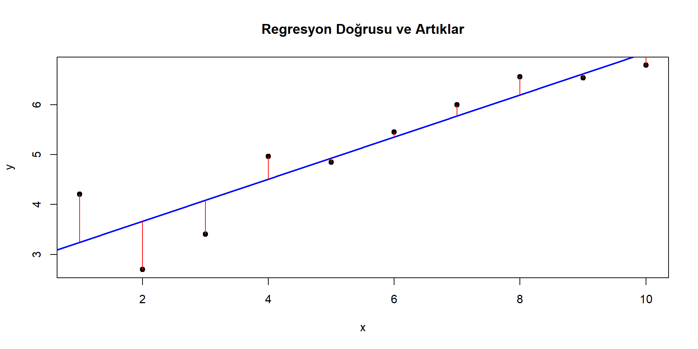
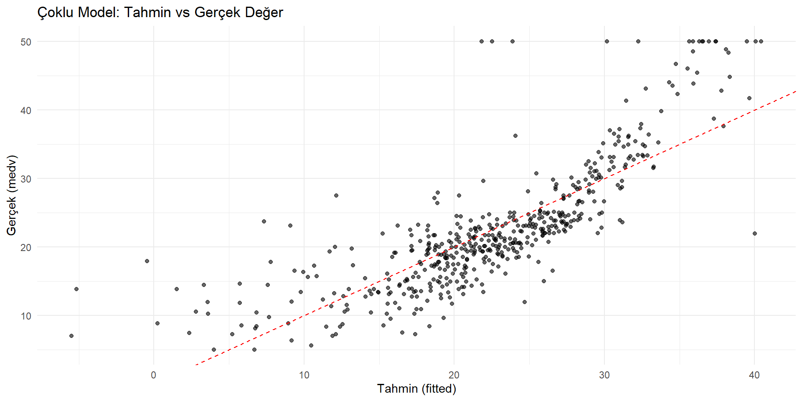

x <- 1:10
y <- 2 + 0.5 * x + rnorm(10, sd = 1)
model <- lm(y ~ x)
plot(x, y, pch = 19, main = "Regresyon Doğrusu ve Artıklar")
abline(model, col = "blue", lwd = 2)
segments(x, y, x, fitted(model), col = "red") # artıklar (hatalar)
Doğrusal Regresyon Analizi
16-05-2025
📦 Ders Materyalleri: https://github.com/MFatihTuzen/UYIK-R
Doğrusal regresyon, bir bağımlı değişkenin (sonucun) bir veya birden fazla bağımsız değişken (girdi) yardımıyla doğrusal bir ilişki modeli üzerinden tahmin edilmesini sağlayan istatistiksel bir yöntemdir.
Regresyon, veriler arasındaki ilişkileri modellenebilir ve yorumlanabilir hale getirir.
Ancak korelasyon ≠ nedensellik olduğunu asla unutmamak gerekir.
\[ y_i = \beta_0 + \beta_1 x_i + \varepsilon_i \]
Amaç: Hata terimlerinin karesinin toplamını minimize eden \(\beta_0\) ve \(\beta_1\) değerlerini bulmaktır.
Minimize edilen fonksiyon:
\[ \text{SSE} = \sum_{i=1}^{n} (y_i - \hat{y}_i)^2 = \sum_{i=1}^{n} (y_i - (\beta_0 + \beta_1 x_i))^2 \]
Bu işlemin sonunda \(\beta_0\) ve \(\beta_1\) için kapalı form çözümler elde edilir.
Modelin Sağlıklı İşleyebilmesi İçin Gerekli Koşullar
| Varsayım | Açıklama |
|---|---|
| Lineerlik | \(x\) ile \(y\) arasında doğrusal ilişki olmalı |
| Hataların ortalaması sıfırdır | \(E[\varepsilon_i] = 0\) |
| Sabit varyans (homoskedastisite) | Hataların varyansı sabittir |
| Bağımsızlık | Gözlemler birbirinden bağımsızdır |
| Normal dağılım | Hatalar normal dağılmıştır (özellikle çıkarım için) |
❗ Varsayımlar sağlanmazsa tahminler tutarsız veya yanlı olabilir.
Artık, bir gözlem için modelin yaptığı tahmin ile gerçek değer arasındaki farktır:
\[ \varepsilon_i = y_i - \hat{y}_i \]
🔴 Kırmızı çizgiler artıkları temsil eder. Modelin her noktada ne kadar saptığını gösterir.
Bostonveri seti, MASS paketinde yer alır.
506 gözlem ve 14 değişkenden oluşur.
Amaç: Boston’daki konut değerlerini sosyo-ekonomik ve çevresel değişkenlerle açıklamak.
'data.frame': 506 obs. of 14 variables:
$ crim : num 0.00632 0.02731 0.02729 0.03237 0.06905 ...
$ zn : num 18 0 0 0 0 0 12.5 12.5 12.5 12.5 ...
$ indus : num 2.31 7.07 7.07 2.18 2.18 2.18 7.87 7.87 7.87 7.87 ...
$ chas : int 0 0 0 0 0 0 0 0 0 0 ...
$ nox : num 0.538 0.469 0.469 0.458 0.458 0.458 0.524 0.524 0.524 0.524 ...
$ rm : num 6.58 6.42 7.18 7 7.15 ...
$ age : num 65.2 78.9 61.1 45.8 54.2 58.7 66.6 96.1 100 85.9 ...
$ dis : num 4.09 4.97 4.97 6.06 6.06 ...
$ rad : int 1 2 2 3 3 3 5 5 5 5 ...
$ tax : num 296 242 242 222 222 222 311 311 311 311 ...
$ ptratio: num 15.3 17.8 17.8 18.7 18.7 18.7 15.2 15.2 15.2 15.2 ...
$ black : num 397 397 393 395 397 ...
$ lstat : num 4.98 9.14 4.03 2.94 5.33 ...
$ medv : num 24 21.6 34.7 33.4 36.2 28.7 22.9 27.1 16.5 18.9 ...| Değişken | Açıklama |
|---|---|
medv |
Median konut değeri (1000 $ cinsinden) → bağımlı değişken |
lstat |
% düşük sosyo-ekonomik statüdeki insanlar |
rm |
Ortalama oda sayısı |
crim |
Suç oranı |
nox |
Azot oksit yoğunluğu (hava kirliliği) |
dis |
Şehir merkezine uzaklık |
ptratio |
Öğrenci-öğretmen oranı |
age |
%1940’tan önce inşa edilmiş ev oranı |
indus |
Endüstriyel alan oranı |
chas |
Charles Nehri kenarında mı? (0 = hayır, 1 = evet) |
Değişkenlerden biriyle başlayarak konut değerini (
medv) tahmin etmek.
Başlangıç:medv ~ lstat→ basit regresyon modeli.
lstat?rm, crim gibi değişkenlerle çoklu modele geçeceğizmedv ~ lstatAmaç: Düşük sosyo-ekonomik statüdeki insanların oranı arttıkça, konut fiyatı (
medv) nasıl değişiyor?
Call:
lm(formula = medv ~ lstat, data = Boston)
Residuals:
Min 1Q Median 3Q Max
-15.168 -3.990 -1.318 2.034 24.500
Coefficients:
Estimate Std. Error t value Pr(>|t|)
(Intercept) 34.55384 0.56263 61.41 <2e-16 ***
lstat -0.95005 0.03873 -24.53 <2e-16 ***
---
Signif. codes: 0 '***' 0.001 '**' 0.01 '*' 0.05 '.' 0.1 ' ' 1
Residual standard error: 6.216 on 504 degrees of freedom
Multiple R-squared: 0.5441, Adjusted R-squared: 0.5432
F-statistic: 601.6 on 1 and 504 DF, p-value: < 2.2e-16Call:
Model formülünü tekrar gösterir: medv ~ lstat
Coefficients:
| Terim | Estimate | Std. Error | t value | Pr(> |
|---|---|---|---|---|
| Intercept | 34.5538 | 0.5626 | 61.41 | < 2e-16 |
| lstat | -0.9500 | 0.0387 | -24.54 | < 2e-16 |
Eğer p < 0.05 ise, o değişkenin modele anlamlı katkı sağladığı düşünülür.
Std. Error (Standart Hata), tahmin edilen regresyon katsayısının (β̂) ne kadar belirsiz olduğunu ölçer.
Başka bir deyişle, katsayının örnekleme dağılımının standart sapmasıdır.
🔎 İyi bir model genellikle anlamlı katsayılar + küçük standart hatalara sahiptir.
broom paketi kullan: Daha okunabilir sonuçlar# A tibble: 1 × 12
r.squared adj.r.squared sigma statistic p.value df logLik AIC BIC
<dbl> <dbl> <dbl> <dbl> <dbl> <dbl> <dbl> <dbl> <dbl>
1 0.544 0.543 6.22 602. 5.08e-88 1 -1641. 3289. 3302.
# ℹ 3 more variables: deviance <dbl>, df.residual <int>, nobs <int># A tibble: 2 × 5
term estimate std.error statistic p.value
<chr> <dbl> <dbl> <dbl> <dbl>
1 (Intercept) 34.6 0.563 61.4 3.74e-236
2 lstat -0.950 0.0387 -24.5 5.08e- 88# A tibble: 506 × 8
medv lstat .fitted .resid .hat .sigma .cooksd .std.resid
<dbl> <dbl> <dbl> <dbl> <dbl> <dbl> <dbl> <dbl>
1 24 4.98 29.8 -5.82 0.00426 6.22 0.00189 -0.939
2 21.6 9.14 25.9 -4.27 0.00246 6.22 0.000582 -0.688
3 34.7 4.03 30.7 3.97 0.00486 6.22 0.00100 0.641
4 33.4 2.94 31.8 1.64 0.00564 6.22 0.000198 0.264
5 36.2 5.33 29.5 6.71 0.00406 6.21 0.00238 1.08
6 28.7 5.21 29.6 -0.904 0.00413 6.22 0.0000440 -0.146
7 22.9 12.4 22.7 0.155 0.00198 6.22 0.000000620 0.0250
8 27.1 19.2 16.4 10.7 0.00362 6.20 0.00544 1.73
9 16.5 29.9 6.12 10.4 0.0136 6.20 0.0194 1.68
10 18.9 17.1 18.3 0.592 0.00274 6.22 0.0000125 0.0954
# ℹ 496 more rowsconfint() fonksiyonu ile güven aralığına baksigmaBu değer “gerçek veri ile modelin tahminleri ortalama ne kadar sapıyor?” sorusunun cevabıdır.
lstat değişkeni 1 birim arttığında (örneğin %12 → %13), medv ortalama β₁ kadar azalır🔵 Mavi çizgi modelin tahmin ettiği regresyon doğrusudur.
Noktaların bu doğruya uzaklığı artık değerlerdir ve modelin ne kadar sapma yaptığını gösterir.
Bu model yalnızca doğrusal bir ilişki varsayar.
Ama bu ilişki her zaman doğrusal olmayabilir — grafik bu varsayımı test etmek için önemlidir.
Model her bir gözlem için ne kadar doğru tahmin yapıyor?
Artıklar ne kadar büyük? Sistematik sapma var mı?
library(broom)
# augment ile detaylı çıktı
augmented <- augment(model1)
# İlk 6 gözlem için çıktıya bakalım
head(augmented)# A tibble: 6 × 8
medv lstat .fitted .resid .hat .sigma .cooksd .std.resid
<dbl> <dbl> <dbl> <dbl> <dbl> <dbl> <dbl> <dbl>
1 24 4.98 29.8 -5.82 0.00426 6.22 0.00189 -0.939
2 21.6 9.14 25.9 -4.27 0.00246 6.22 0.000582 -0.688
3 34.7 4.03 30.7 3.97 0.00486 6.22 0.00100 0.641
4 33.4 2.94 31.8 1.64 0.00564 6.22 0.000198 0.264
5 36.2 5.33 29.5 6.71 0.00406 6.21 0.00238 1.08
6 28.7 5.21 29.6 -0.904 0.00413 6.22 0.0000440 -0.146| Kolon | Açıklama |
|---|---|
.fitted |
Modelin tahmin ettiği medv değeri |
.resid |
Artık değeri: \(y_i - \hat{y}_i\) |
.std.resid |
Standardize artık (çıkıntılı gözlemleri tespit için) |
.hat |
Leverage değeri (etkili gözlem mi?) |
.sigma |
Tahminin hata tahmini (her gözlem için) |
🔴 Kırmızı çizgi tam tahmin çizgisidir: \(\hat{y} = y\)
Noktalar bu çizgiden çok sapıyorsa model orada başarısızdır.
.std.resid > 2 olan gözlemleri potansiyel uç değer olarak işaretleyin..hat değeri yüksekse gözlem model üzerinde orantısız etki yaratıyor olabilir.# A tibble: 32 × 8
medv lstat .fitted .resid .hat .sigma .cooksd .std.resid
<dbl> <dbl> <dbl> <dbl> <dbl> <dbl> <dbl> <dbl>
1 43.8 3.57 31.2 12.6 0.00518 6.20 0.0108 2.04
2 14.4 34.4 1.86 12.5 0.0204 6.20 0.0432 2.04
3 50 1.73 32.9 17.1 0.00661 6.17 0.0253 2.76
4 50 1.92 32.7 17.3 0.00645 6.17 0.0252 2.79
5 50 3.32 31.4 18.6 0.00536 6.17 0.0243 3.00
6 50 3.7 31.0 19.0 0.00509 6.16 0.0239 3.06
7 39.8 7.56 27.4 12.4 0.00298 6.20 0.00600 2.00
8 50 4.45 30.3 19.7 0.00459 6.16 0.0232 3.17
9 50 2.97 31.7 18.3 0.00562 6.17 0.0245 2.95
10 48.5 3.81 30.9 17.6 0.00501 6.17 0.0202 2.83
# ℹ 22 more rowsModelin ne kadar iyi tahmin yaptığı sadece \(R^2\) ile anlaşılmaz.
Gerçek değerlerden ortalama ne kadar sapma olduğunu da bilmeliyiz.
| Metrik | Açıklama |
|---|---|
| RMSE | Ortalama karekök hata: büyük hatalar daha çok cezalandırılır |
| MAE | Ortalama mutlak hata: yorumlaması kolay |
| R² | Açıklanan varyans oranı |
| Adjusted R² | Değişken sayısına göre düzeltilmiş R² |
| AIC / BIC | Model karşılaştırması: daha düşük daha iyidir |
| sigma() | Ortalama artık sapması (residual std error) |
library(Metrics)
actual <- Boston$medv
predicted <- predict(model1)
rmse(actual, predicted) # Ortalama hata miktarı[1] 6.203464[1] 4.505281[1] 6.21576# A tibble: 1 × 4
r.squared adj.r.squared AIC BIC
<dbl> <dbl> <dbl> <dbl>
1 0.544 0.543 3289. 3302.🔍
glance()ile performans metriklerine tek satırda ulaşılır.
Performans metriğini yorumlarken:
“Tahmin ettiğim değer, ortalama olarak gerçek değerden ne kadar sapıyor?”
sorusuna cevap arıyoruz.
Fiyatları etkileyebileceğini düşündüğümüz değişkenlerle daha gerçekçi bir model kurmak
Call:
lm(formula = medv ~ lstat + rm + age + crim, data = Boston)
Residuals:
Min 1Q Median 3Q Max
-18.105 -3.501 -1.143 1.968 28.180
Coefficients:
Estimate Std. Error t value Pr(>|t|)
(Intercept) -2.34910 3.17079 -0.741 0.45913
lstat -0.61258 0.05642 -10.857 < 2e-16 ***
rm 5.11625 0.45083 11.349 < 2e-16 ***
age 0.01259 0.01116 1.129 0.25950
crim -0.10639 0.03216 -3.308 0.00101 **
---
Signif. codes: 0 '***' 0.001 '**' 0.01 '*' 0.05 '.' 0.1 ' ' 1
Residual standard error: 5.488 on 501 degrees of freedom
Multiple R-squared: 0.6468, Adjusted R-squared: 0.6439
F-statistic: 229.3 on 4 and 501 DF, p-value: < 2.2e-16lstat 1 birim artarken, rm, age, crim sabit tutulurlibrary(broom)
aug2 <- augment(model2)
ggplot(aug2, aes(x = .fitted, y = medv)) +
geom_point(alpha = 0.6) +
geom_abline(slope = 1, intercept = 0, color = "red", linetype = "dashed") +
labs(
title = "Çoklu Model: Tahmin vs Gerçek Değer",
x = "Tahmin (fitted)",
y = "Gerçek (medv)"
) +
theme_minimal()
Çoklu model,
medv ~ lstattek başına olduğundan genellikle daha iyi sonuç verir.
Ama anlamlılık, çoklu ilişki ve etki büyüklüğü gibi unsurları göz ardı etmemek gerekir.
VIF (Variance Inflation Factor) ile çoklu doğrusal ilişkiyi kontrol et
🔍 VIF > 5 → ciddi çoklu ilişki riski,
VIF > 10 → kritik düzeyde uyarı
performance paketi ile hızlı model testiRegresyon modelinin varsayımlarını tek adımda test etmek
Artıkların dağılımı, varyans sabitliği, lineerlik, normal dağılım ve uç değerler dahil
| Grafik | Ne Gösterir? | Nasıl Yorumlanır? |
|---|---|---|
| Posterior Predictive Check | Histogram veya yoğunluk grafiği olarak verilir. | Modelin tahmin ettiği değerlerin, gerçek değerlerle benzer dağılıma sahip olup olmadığını kontrol eder. |
| Linearity Check | Fitted vs Residuals | Noktalar rastgele dağılmalı. Desen varsa lineerlik sağlanmıyor. |
| Homoscedasticity | Artıkların sabit varyansı | Fan açılıyorsa heteroskedastisite olabilir. |
| Normality of Residuals | QQ Plot | Noktalar eğriden sapıyorsa normal dağılım varsayımı bozulmuş olabilir. |
| Outliers | Standardize artıklar ve leverage | Uzak noktalar varsa, potansiyel etkili uç gözlemler olabilir. |
| Influential Obs. | Cook’s Distance | .5 üzeri değerler varsa dikkat: gözlem modeli etkiliyor olabilir. |
lmtest::bptest() ile test et, robust modelleri düşünglm düşün
check_model()sonucu sadece görüp geçilmez.
Her bir grafiği modelin anatomik bir MR’ı gibi düşün.
Varsayımlar sağlanmıyorsa: model değiştirilir ya da dönüştürülür.
factor() kullanİyi bir regresyon modeli, sadece yüksek R² değil;
anlamlı katsayılar, düşük multikolinearite, tutarlı varsayımlar ve yorumlanabilirlik içerir.
| Paket | Amaç | Notlar |
|---|---|---|
broom |
Regresyon çıktısını düzenleme | tidy(), glance(), augment() fonksiyonları |
car |
Varsayım testi, multikolinearite | vif(), linearHypothesis() |
performance |
Model varsayımları, etkili gözlem tespiti | check_model() ile tam analiz |
modelsummary |
Yayın kalitesinde regresyon tabloları | Çoklu model karşılaştırması kolay |
ggfortify |
Regresyon için otomatik artık grafikleri | autoplot(lm_model) |
glmnet |
Ridge, Lasso, Elastic Net | Regularizasyon için |
tidymodels |
Modern modelleme altyapısı | recipes, workflow, tune, parsnip |
jtools |
Regresyon grafiklendirme, etkili sunum | summ(), plot_summs() |
broom, modelsummary, jtoolsperformance, carggplot2, ggfortify, jtoolsglmnet, tidymodelsmodelsummary, stargazer (LaTeX için)Doğrusal regresyon, sadece “ilk model” değil, çoğu zaman en güçlü referans modeldir.
Modern araçlarla desteklenirse hem sağlam, hem de sürdürülebilir analizler yapılabilir.
lm, summary, augment)check_model, vif)Katılımınız için teşekkür ederim!
📧 İletişim: Dr. M. Fatih Tüzen📧 fatih.tuzen@tuik.gov.tr
🌐 rprogramlama.netlify.app
🔗 linkedin.com/in/dr-m-fatih-t-2b2a4328
Altıncı Uluslararası Uygulamalı İstatistik Kongresi (UYIK 2025)